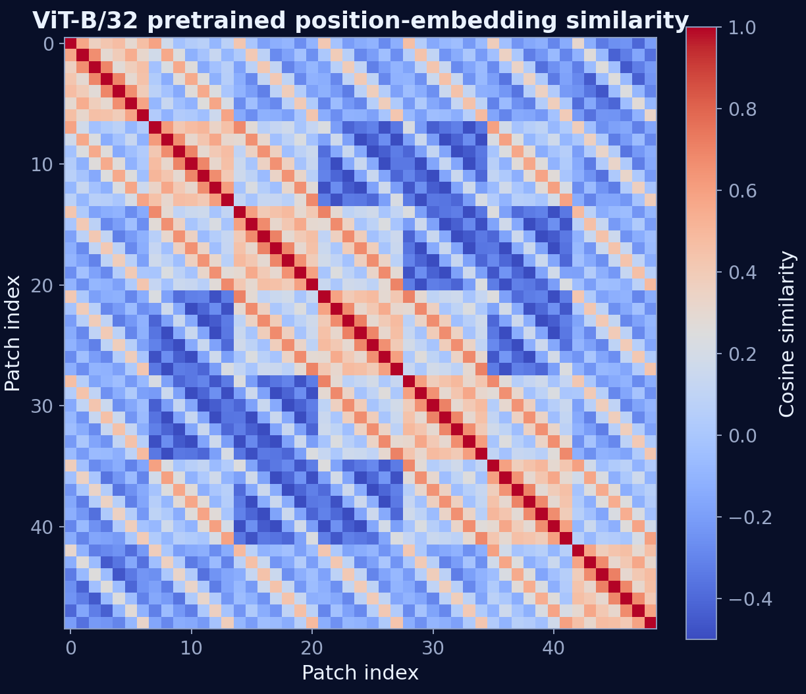

ANALYSIS · POSITIONAL ENCODING
Position embeddings learn the grid

0.644
mean cosine · adjacent patches
−0.157
mean cosine · far patches (≥6 apart)
7 × 7
grid topology recovered
Pretrained position embeddings learn a 2-D grid: neighbours align, distant patches anti-correlate. The model reconstructs where each patch sits — without ever being told.
09 / 13